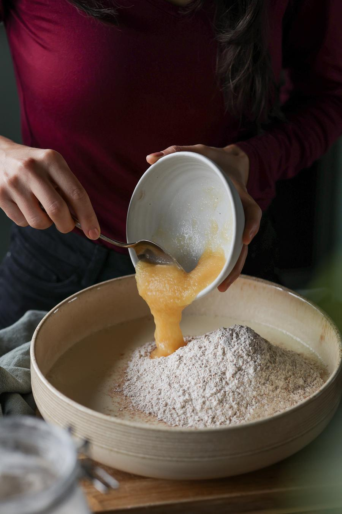
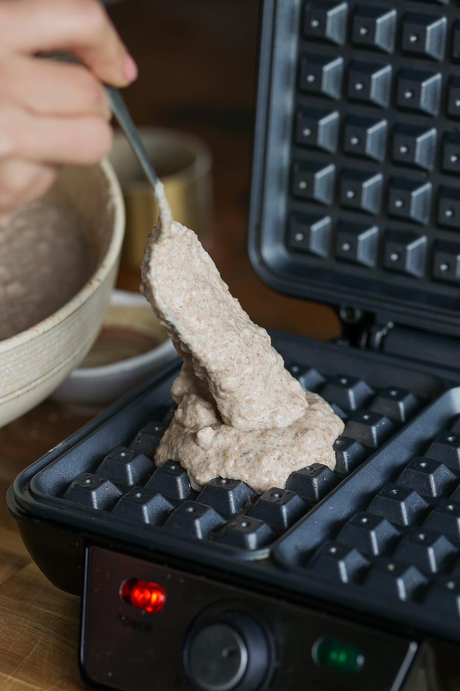
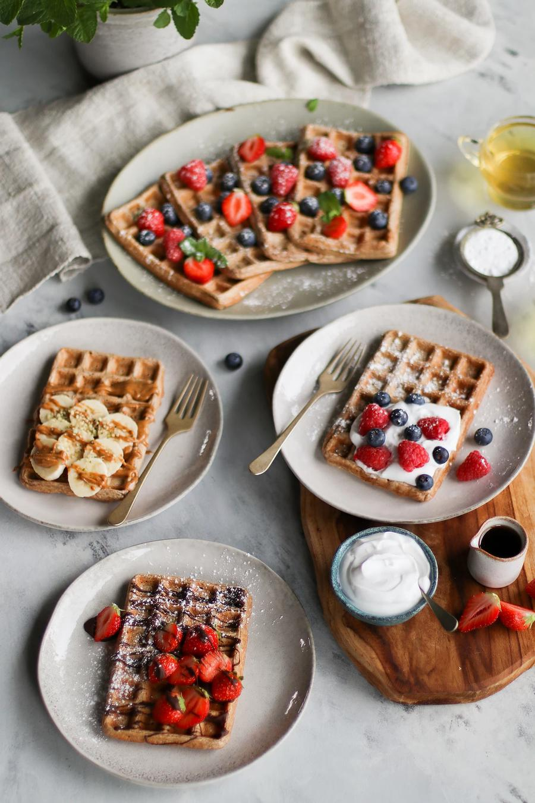

Vegan Breakfast Waffles

- 🍽️Waffles: 7
- 🍝Total time: 30 min
- ⏱️Prep time: 10 min
- 🧑🏻🍳Cook time: 20 min
Ingredients
- 1½ cups (360 mL) unsweetened soy milk†
- 1 Tbsp (15 mL) apple cider vinegar
- 2 cups (252 g) whole wheat flour
- ⅓ cup (80 mL) unsweetened applesauce
- 2 tsp (7 g) baking powder
- 1 tsp (3 g) ground cinnamon
- 1 tsp (5 mL) pure vanilla extract
- ½ tsp salt
Optional toppings
any nut butter of choice
maple syrup
mixed fresh berries
powdered sugar
unsweetened coconut yogurt
Directions
- To a large bowl, add the milk and vinegar, mix, and let this rest for 5 minutes. The milk will start to slightly curdle, and this is normal.
- Heat the waffle maker. Then, returning to the bowl, add the flour, applesauce, baking powder, cinnamon, vanilla, and salt, then mix until just combined.

- Brush the waffle pan with some oil. Add a few spoonfuls of the waffle batter until the element is filled near to the top. Gently close the lid, and let it cook for 4 - 5 minutes, or until golden. Repeat this with the remaining batter.

- Add desired toppings to your waffles, and enjoy!

Notes
- † We recommend using either soy or pea milk for this recipe, as the high protein content of these milks are what allows the milk to curdle to create vegan buttermilk. We can't guarantee other plant-based milk will be successful.
Storage
- Best if enjoyed immediately.
- The waffles can be stored separately from the toppings in an airtight container in the fridge for up to 2 days.
- Batch make and store these waffles in the freezer for up to 2 months. Simply pop in the toaster or oven to reheat and serve for a speedy breakfast.